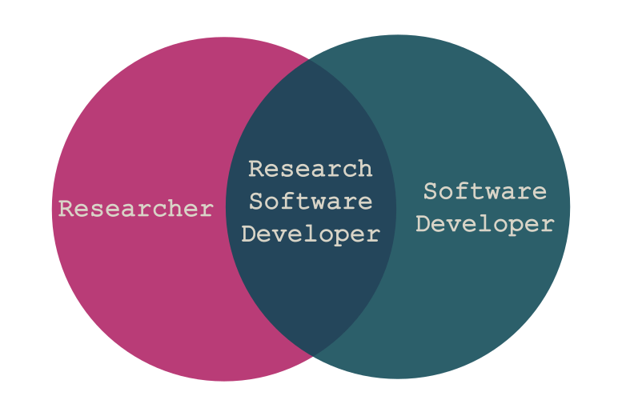
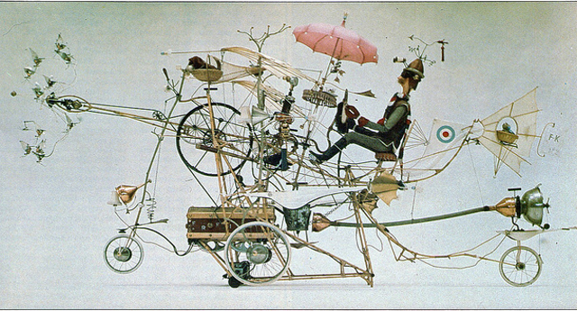
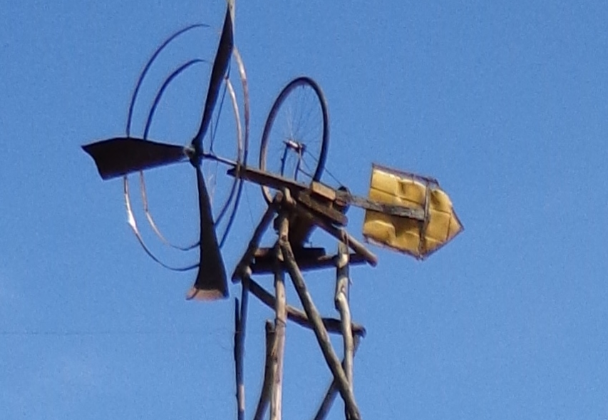
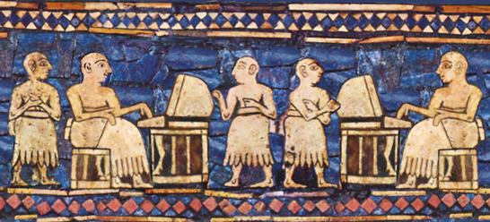
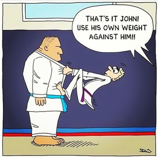

Close
Close

The Craftsperson
& The Scholar
James Hetherington

The State of Research Software {.chapter-title}
The SIRO Problem {.diagram2}

PhDWare
- Don't look if anyone's done it before
- Code till it works
- Generate a figure
- Throw it away
Labware
- Understood by one genius
- Implements great science, now
- FORTRAN in any language
- Code not engineered for readability
- Can't add new science
HPCWare
- Get a 5% improvement in performance
- On a particular architecture
- Publish a scaling graph
- Selection against:
- Readability
- Maintainability
- Adaptability
ConsultantWare
- Little understanding of the science
- Overengineered
- Unmaintainable by the research group
Research Software Engineers {.chapter-title}
The Craftsperson And The Scholar {.diagram2}

Research Software Engineers {.poster #dilstein}

Research Software Engineers
- Not independent researchers
- No personal research agenda
- Facilitative, supportive, and collaborative
- Part of the academic community
- Deep engagement with research groups
Why it works
- People want to be RSEs
- We have been hiding as:
- RAs who program too much
- HPC or research group sysadmins
The movement
- We need a name and some status!

- Measure and incentivise RSEs correctly
- Integrate RSEs within HEIs
- Support institutional innovation
Our story
- April 2012: Idea and name at SSI Collaborations Workshop
- September 2012: UCL Group Founded
- 2014: Manchester group
- 2015: Southampton and Cambridge Groups
- Jan 2016: EPSRC awards first Research Software Engineering Fellowships
- 2016: Bristol, Sheffield Groups
Our story
- September 2016: First RSE conference, 202 attendees, 14 countries
- 2017: Leicester, Imperial College groups.
- September 2017: Second conference, 224 attendees, 12 countries
- Formally incorporated as a charity
- Jan 2018: Second RSE fellows appointed
RSE Groups {.chapter-title}
RSE Group
- Shared home for RSEs in an institution
- Both academic and Support
- "Science as a Service"
Activities
- Projects
- Consulting
- Training
- Infrastructure
Domain
- From HPC codes to simple scripts
- From theoretical physics to digital humanities
UCL Model
- All roles "permanent"
- But funded from research grant income on a pooled basis
The UCL Research Software Group

- Helped UCL researchers win over £2M
- Grown through grant funding
- From archaeology to astrophysics
Readable, reliable, and reproducible
We help make code:
- Last beyond the end of the grant that funded it
- Be usable by someone other than the PhD student who wrote it
- Have a standard of correctness better than "the graph looks about right"
Why work with RSEs? {.chapter-title}
Clean code makes performance possible
LikeLTD

Structural work:
- Broken down into functions
- Separate objective function from home-made optimiser
- Use standard optimiser libraries
Clean code makes performance possible
LikeLTD
Performance improvements:
- 4 times from moving to C
- 8 times from parallelisation
- 10 times from change of optimisation algorithm
- 300 times total
Engineering helps legacy code live
DCProgs
Before:
* Venerable Fortran
* Hasn't compiled since 2006
* Underpins Nature published research

Engineering helps legacy code live
DCProgs
Our solution:
* Old code as "test oracle"
* Reimplemented in C++ and Python
* Use algorithm libraries
Since then:
* ARCHER parallelisation
* MCMC inference
Reliability unlocks science
HemeLB Setup Tool
* Voxelisation for Lattice Boltzman
* Crashed 1 time in 20
* So tweak the origin!

Reliability unlocks science
HemeLB Setup Tool
* Replace with standard comp geometry library
* Can handle all geometries instead of 19 in 20
* Means can model changing geometries
RSEs and Teaching {.chapter-title}
Software Carpentry
* Intensive "bootcamp"
* Automation
* Version control
* Unit testing
* Databases
> I found the command line intimidating at first, but after a while it felt
> like I was inside my computer.
> -- A student at a UCL software carpentry event
RITS's training programme
- Software carpentry
- Data carpentry
- Introductory Python for Data Analysis
- Research Software Engineering with Python
- Research Computing with C++
- High Performance and High Throughput Computing
Digitally native learning tools
- Web-first but classroom- and kindle-ready
- Single source, multiple formats
- Examples which work:
- Generated lecture notes from code that is executed and complete
- Open and collaborative
- CC-BY license on notes
- Massive cross-institutional co-creation
Active classrooms
- Practicals and concepts together
- Bring your own device
- Post-it-notes and etherpads
The syllabus is full.
- Ideally, everyone would know everything!
- This is clearly impossible
- So we need division of labour
- and enough training to work together
Good, huh? {.chapter-title}
Lessons learned
Well, it hasn't always been pretty.
I'll try to indicate some tips and tricks learned while creating a generalist science-as-a-service software group.
Some of these we got right. Some are things I wish I'd known at the beginning.
Sell performance, deliver reproducibility {#flymac .poster}

Sell performance
Deliver reproducibility
Use appropriate technology {#windvane .poster}

Use appropriate technology
Look beyond the usual {#ancient .poster}
Look beyond the usual

Make space to learn {#crafty .poster}
Make space to learn
Organisational Judo {#judo .poster}
Organisational
Judo

Computational Science as a Service {#it-crowd .poster}
Computational Science as a Service

Multi- professionalism {.chapter-title}
Multiprofessional
RSE combines:
- Researcher
- Coder
Team Research
- RSE
- Data Scientist
- Visualisation
- Interaction
- ...
The Turing Institute {.poster}

- UK's national institute for data science
- Joint venture of 5 UK universities
- Shared Faculty
Research Engineering at the Turing Institute
- Shared research staff pool
- RSEs
- Data Scientists
To finish {.chapter-title}
Beyond the Postdoc {.poster}
The Sith approach
to professional continuity

Why you should have one
- More and more research uses software
- General programmers can't understand research
- Postdocs and PhD students don't have time to make reliable code
Why you should be one
- Write papers
- Make code
Acknowledgements
- Neil Chue Hong, Simon Hettrick
- Susan Morrell and her team
- Alys Brett, Chris Woods
- Tom Couch
- Mayeul d'Avezac, Jens Nielsen
- Raquel Alegre, Jonathan Cooper, David Perez-Suarez
- James Geddes, Martin O'Reilly